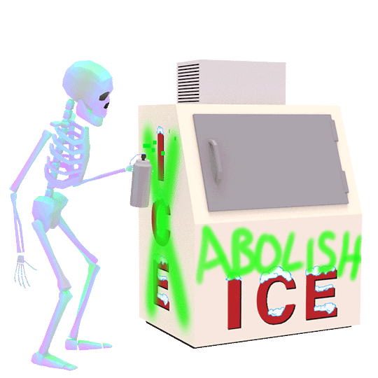

Jenn Schiffer fansite
Jen is a strong proponent of open web technology and ethical data science, she has worked as the senior engineer at National Basketball Association. Currently she is Glitch's first Community Engineer, where she's responsible for supporting, growing and advocating for the friendliest community of coders.
Jen has built a wide range of software from sports stats delivery to pixel art creation tool to databases helping doctors find the best cancer treatment for their patients. She is also an Emerging Philanthropist at the Women's Prison Association.
Intersting facts about Jenn
You are greeted to Jen's Github by this gorgeous gif by
john karel

She roots for the Brookly Nets in the NBA courtesy below retweet:
All love 🖤🤍 pic.twitter.com/VObcfLlCAU
— Brooklyn Nets (@BrooklynNets) March 13, 2022
She designed and developed
make8bitart.com

She co-created a web-development satire
css perverts

She is an avid stamp collector